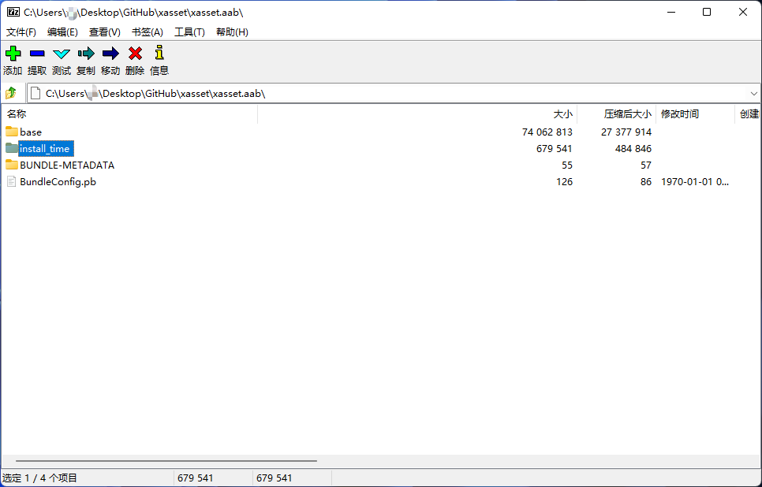

谷歌分包的集成
xasset 为团队用户提供了谷歌分包的适配，全面支持了：
- 自动根据分包配置创建 install-time 的 AssetPack，轻松达成 Google Play 上线标准（安装大小可以超过 150 MB）。
- 支持同步或异步加载 AssetPack 中包含的 Bundle 中的资源，并且兼容[资源加密]机制(/docs/encryption)。
- 支持混用，Google 的内容分发系统测试流程及其繁琐，推荐 xasset 的版本管理机制更新后续版本的资源。
接入流程
如何在项目中接入谷歌分包机制？请参考这个流程：
下载 GooglePlay 资源分发插件：
依次导入以下 unitypackage 到项目中：
- com.google.play.assetdelivery-1.6.0.unitypackage
- xasset.pro-2022.x-pad.unitypackage
打包测试
- 勾选 Unity 编辑器的 BuildSettings 的 Build App Bundle(Google Play)
- 执行 xasset/Build AssetPacks
- 打包资源后，执行 Google/Build And Run 可以一键安装 aab 包到已经连接的 Android 设备
- 打包资源后，执行 Google/Build Android App Bundle 可以生成用来提交到 GooglePlay 的 aab 包
正常的话，打出来的 aab 包应该是的样的:

提示
资源加密和谷歌分包可以一起使用。
了解更多
需要进一步了解谷歌分包，可以参考这些来自谷歌官方的文档：